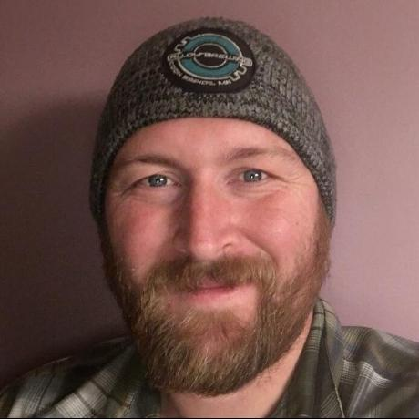

Hi there, my name is Bryan Bloomquist and this is the first website I have created in 20 years. Don't bother looking for the first one, it doesn't exist anymore, I've checked (good lord I hope it's not still out there). After college I got a job with the post office and spent the next 14 years bustin my knees and back delivering the mail and running away from dogs, yes, that really is a thing. At the age of 39 I finally had enough and I quit my job to be a full time dad and a part time student at the University of Minnesota Full Stack Coding Bootcamp. I'm pumping up my knowledge of HTML, CSS, and JavaSript, which will become evident as you explore my portfoliio. I love doing this, the problem solving, the search for solutions, the coding, the satisfaction of making a website that works and looks good too. I also love helping others find solutions to there problems, I've taken an active roll in our classes' Slack channel to help others who need it. I knew I wanted to code and that I liked it, but it wasn't until the first day of bootcamp that I realized how much I really loved it. I regret that I spent the last 14 years not doing this, I'm not going to regret the next 14, or 24, or 34 years not doings something that I enjoy.